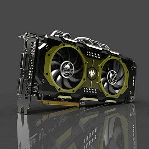

Składamy komputer. Wybieramy kartę graficzną.
Przeanalizujemy kryteria i zastanowimy się, jaka karta graficzna będzie optymalna dla naszego komputera.

Aby powrócić kliknij baner.
Rozszyfrowujemy oznaczenia kart graficznych
Jaka karta graficzna
Na sam początek warto zwrócić uwagę w jaki sposób zakodowane są nazwy poszczególnych kart, albowiem nie są to jedynie ciągi losowych liczb. Grafika, którą przygotowałem powinna rzucić nieco światła dziennego na tą kwestię. Wyjaśnione są w niej oznaczenia aktualnych modeli obu producentów.
Na sam początek warto zwrócić uwagę w jaki sposób zakodowane są nazwy poszczególnych kart, albowiem nie są to jedynie ciągi losowych liczb. Grafika, którą przygotowałem powinna rzucić nieco światła dziennego na tą kwestię. Wyjaśnione są w niej oznaczenia aktualnych modeli obu producentów.
Chwyty sprzedawców czyli jak nie ulec złudzeniu.
Jaka karta graficzna
Pierwszą zasadą jest: Nigdy nie da się porównać dwóch kart graficznych różnych producentów patrząc jedynie na ich specyfikacje. Zerknijmy na tabelkę poniżej.
Pierwszą zasadą jest: Nigdy nie da się porównać dwóch kart graficznych różnych producentów patrząc jedynie na ich specyfikacje. Zerknijmy na tabelkę poniżej.
Zawiera porówanie specyfikacji dwóch kart różnych producentów: GeForce GTX 970 od Nvidii oraz R9 390 od AMD. Widać w niej jak na dłoni, że obie te karty różnią się między sobą zdecydowanie na każdym polu. A mimo tego ich cena jest podobna, co ciekawe wydajność również i są one swoimi bezpośrednimi rywalami, a każda z nich posiada zwolenników oraz przeciwników. Sprawia to, że takie porównanie jest niemiarodajne. Aby uzyskać pełen obraz sytuacji trzeba by obie karty przetestować. Na szczęście nie musimy robić tego samemu, w internecie można znaleźć multum porównań większości układów, warto więc je dokładnie przewertować przed decyzją zakupu.
Co ciekawe, nawet porównując dwie karty tego samego producenta, a nawet z tej samej rodziny można nagiąć specyfikacje tak, aby dwa układy różnych segmentów wyglądały na podobne wydajnościowo.
Co ciekawe, nawet porównując dwie karty tego samego producenta, a nawet z tej samej rodziny można nagiąć specyfikacje tak, aby dwa układy różnych segmentów wyglądały na podobne wydajnościowo.
Mamy tutaj porównanie dwóch kart Nvidii opartej na układzie z rodziny Kepler, czyli serii 7. Teoretycznie układy bardzo podobne, niewielka różnica w taktowaniu rdzenia, tyle samo pamięci, oba oparte na pamięciach GDDR5. Obie wspierają PCIe w wersji 3.0, DirectX 11 i openGL 4.5, a różnica w cenie jest znaczna. Biznes życia? Tak, ale dla sprzedawcy. Te karty tak naprawdę dzieli przepaść nie tylko w wydajności, ale także w stosunku wydajność/cena – z korzyścią dla droższego GTX770 oczywiście. W ten sposób markety łapią przysłowiowego „jelenia„, gdyż niezorientowany kupiec często daje się naciągnąć na pięknie brzmiące hasło „Ultraszybka karta z 4GB pamięci GDDR5 i obsługa najnowszego DirectX 12” pakując się tak naprawdę w sprzęt z półki budżetowej.
Rzetelne porównanie parametrów to też nie wszystko.
Jaka karta graficzna
Jedynym słusznym porównaniem w tej sytuacji może być konfrontacja dwóch kart tego samego producenta, opartych o ten sam układ z tej samej rodziny, tak jak na przykładzie poniżej.
Jedynym słusznym porównaniem w tej sytuacji może być konfrontacja dwóch kart tego samego producenta, opartych o ten sam układ z tej samej rodziny, tak jak na przykładzie poniżej.
W ten sposób mamy pewien ogląd sytuacji, który faktycznie będzie zgodny w pewnym stopniu z rzeczywistą wydajnością. Ale nawet w tym przypadku należy potraktować go z przymrużeniem oka.
Testy najlepszym porównaniem
Jaka karta graficzna
Powtórzę ponownie. Wybór karty powinien być podparty rzeczywistymi testami w grach. Przy czym należy zwrócić uwagę na to, by testy te były przeprowadzane w środowisku jak najbliższemu naszym warunkom. Karty potrafią różnie zachowywać się w zróżnicowanych rozdzielczościach oraz przy różnych procesorach, dlatego patrzmy głównie na testy, gdzie te warunki są zbliżone do naszych.
Powtórzę ponownie. Wybór karty powinien być podparty rzeczywistymi testami w grach. Przy czym należy zwrócić uwagę na to, by testy te były przeprowadzane w środowisku jak najbliższemu naszym warunkom. Karty potrafią różnie zachowywać się w zróżnicowanych rozdzielczościach oraz przy różnych procesorach, dlatego patrzmy głównie na testy, gdzie te warunki są zbliżone do naszych.
4.Karta graficzna
